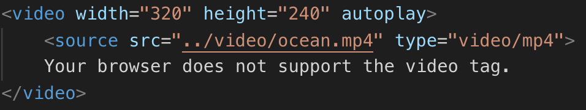
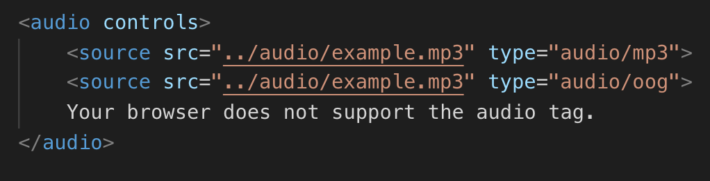
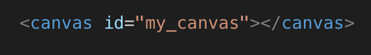
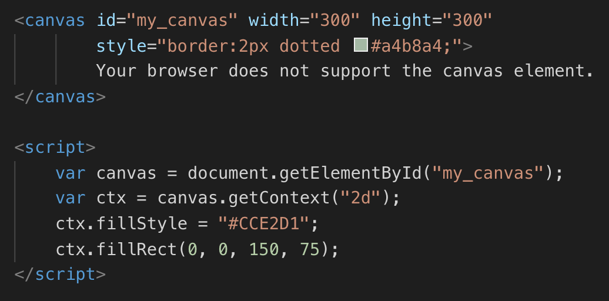

HTML5 tags: Video, Audio, Canvas
Video Tag
The video tag specifies video, such as a movie clip or other video streams. It is a new tag for HTML5.
Currently, there are 3 supported video formats for the video element: MP4, WebM, and Ogg
The code always has to open up with an opening and a closing 'video' tag.
Attributes
One can use 'attributes' to specify the peramaters of the video.
Below is an example of a video with the attributes of 'height', 'width', 'autoplay', 'loop', and 'src'
'src' is ALWAYS needed since that is where we get the video file.
'autoplay' makes it so the user cannot click play, pause or use the volume
'loop' will play the video over and over
'width' and 'height' describe how large the video will be shown on a browser in pixels
Basic Example of a video tag
This example below shows the 'loop' and 'autoplay' attributes.
This example shows the attribute 'controls'
'controls' is what adds on the play, pause, and sound buttons
*One can put more sources as shown in the example above.
If the computer does not recognize any of the sources,
it will write out what is between the video tags.
In this case, it would write out "Your browser does not support the video tag.*
Audio Tag
The audio tag defines sound, such as music or other audio streams.
It is very similar to the video tag.
Currently, there are 3 supported video formats for the audio element: MP3, OGG, and WAV
The code always has to open up with an opening and a closing 'audio' tag.
Attributes
One can use 'attributes' to specify the peramaters of the audio.
'src' is ALWAYS needed since that is where we get the video file.
'autoplay' makes it so the user cannot click play, pause or use the volume
'controls' specifies that audio controls should be displayed
'loop' will play the video over and over
'muted' specifies that the audio output should be muted
'preload' specifies if and how the author thinks the audio should be loaded when the page laods
Basic Example of an audio tag
This example below shows the controls attribute.
*One can put more sources as shown in the example above.
If the computer does not recognize any of the sources,
it will write out what is between the video tags.
In this case, it would write out "Your browser does not support the video tag.*
Canvas Tag
Definition and Usage
The 'canvas' tag is used to draw graphics, on the fly, via scripting (usually JavaScript).
The 'canvas' tag is only a container for graphics, you must use a script to actually draw the graphics.
Canvas has several methods for drawing paths, boxes, circles, text, and adding images.
Canvas can:
- draw text
- draw graphics
- be animated
- be interactive
- be used in games
What does canvas look like in HTML5?
The 'canvas 'element must have an id attribute so it can be referred to by JavaScript.
The width and height attribute is necessary to define the size of the canvas.
You can have multiple 'canvas' elements on one HTML page.
Canvas Drawing Example
*All drawing on the HTML canvas must be done with JavaScript*
Draw a Line with Canvas
"Define a starting point in position (0,0), and an ending point in position (200,100).
Then use the stroke() method to actually draw the line:"
To draw a straight line on a canvas, use the following methods:
- moveTo(x,y) - defines the starting point of the line
- lineTo(x,y) - defines the ending point of the line